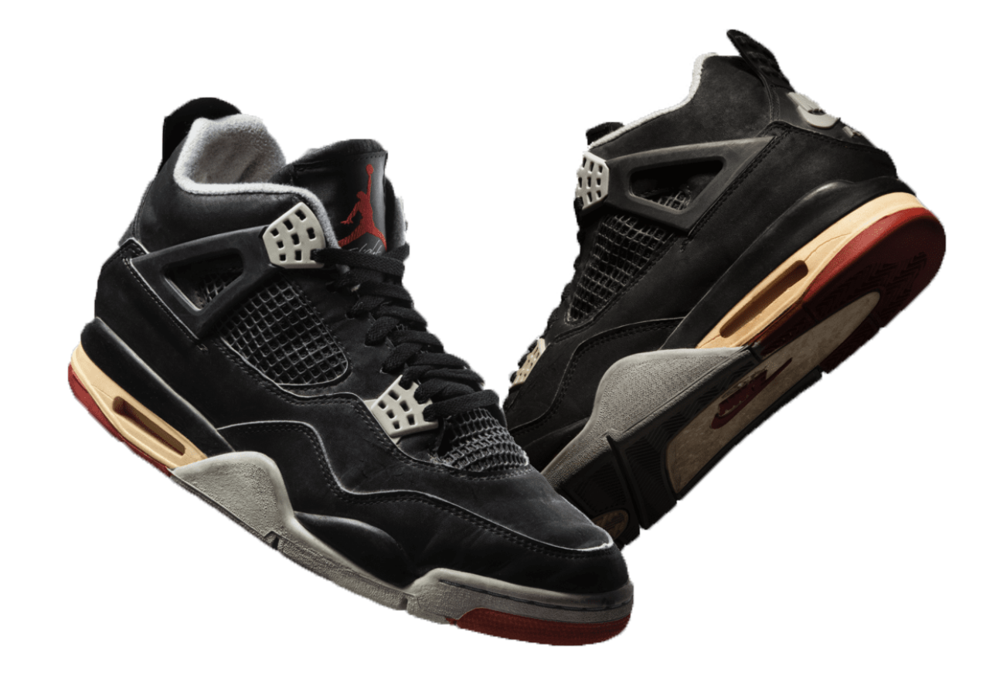
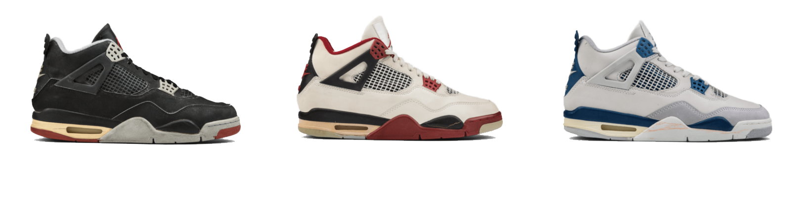
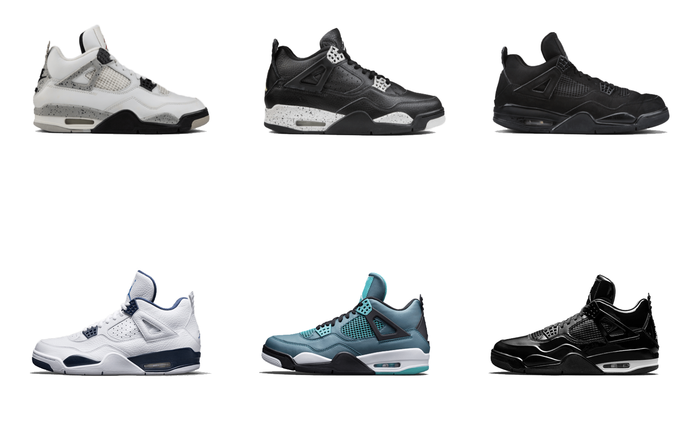
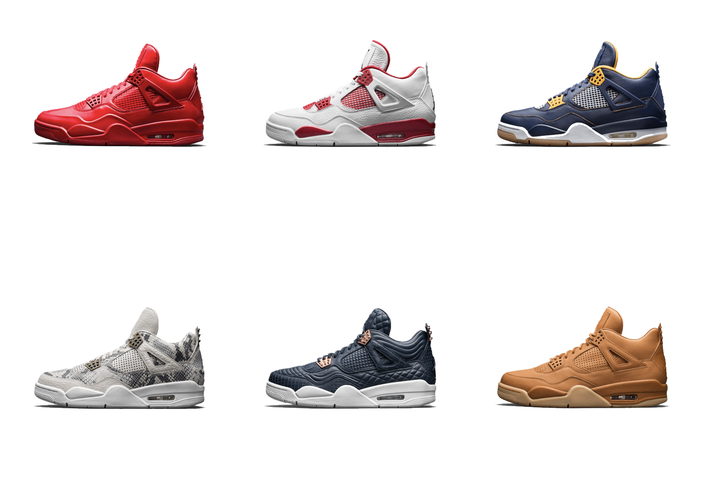
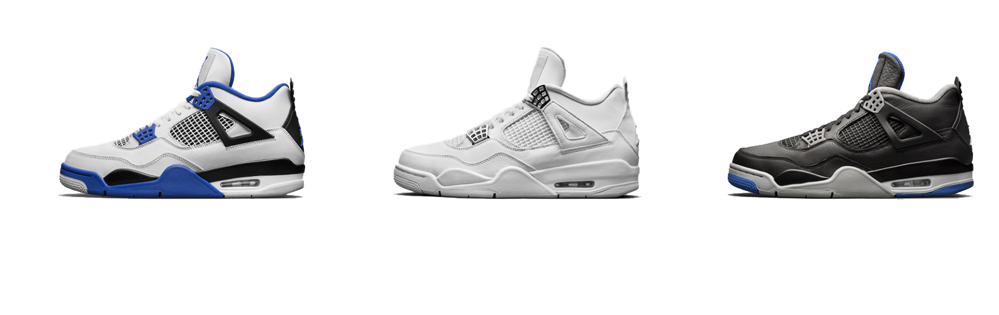

Proving his preeminent athletic prowess and distinctive style, Jordan closed the 1988/89 season with one of the game’s most notable plays. With 6 seconds left in game 5 against Cleveland, MJ sinks “the shot”, a dexterous, buzzer-beating move that continued to propel MJ along on his awe-inspiring journey.
The Air Jordan IV was the first global market release of the franchise. Another first, the shoe appeared in Spike Lee’s film Do the Right Thing, transcending the game of basketball to make a significant impact on pop culture. All eyes were on Jordan as he continued to rise.




